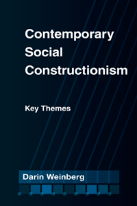

A critical overview of scholarship in social constructionism
A critical overview of scholarship in social constructionism


 A critical overview of scholarship in social constructionism
A critical overview of scholarship in social constructionism

|  |
Contemporary Social ConstructionismKey ThemesDarin Weinbergpaper EAN: 978-1-43990-925-6 (ISBN: 1-4399-0925-3) |
"Darin Weinberg shows, significantly, that there are varieties of social constructionism and, importantly, that the issue of reality is not as threatening as some have figured it to be. From chapters on constructions of the body and the self to a chapter on the construction of social problems, the scientific and moral sweep of the discussion offers unique insight into the breadth of the approach. Contemporary Social Constructionism is a must read for any and all concerned with the experiential status of the person and society."
—Jaber F. Gubrium, University of Missouri
Darin Weinberg provides a detailed, critical overview of the key themes of social constructionism, which explains how phenomena and ways of thinking develop in their social contexts. Weinberg traces the multiple roots of social constructionism, and shows how it has been used, critiqued, and refined within the social and human sciences.
Contemporary Social Constructionism illuminates how constructionist social science developed in relation to positivism, critical and hermeneutic philosophy, and feminism and then goes on to distinguish the concept from postmodernism and deconstructionism. In addition, Weinberg shows how social constructionists have contributed to our understanding of biology, the body, self-knowledge, and social problems.
The result is a contemporary statement of social constructionism that shores up its scientific veracity and demonstrates its analytic power, promise, and influence. The book concludes with a look toward the future of the concept and its use.
Excerpt available at www.temple.edu/tempress
"Weinberg provides a sophisticated and comprehensive outline of the philosophical, epistemological, and historical underpinnings of social constructionism. This book is essential for anyone working in the constructionist paradigm or interested in it more generally�or for anyone setting out to critique it. It should be required reading for any graduate sociology course that takes social constructionism to heart. Contemporary Social Constructionism is the best theoretical/philosophical discussion of constructionism that I have read. Weinberg does an unprecedented service to the discipline."
—James Holstein, Marquette University
"Darin Weinberg has written the definitive book on social constructionism.... This fine book offers an insightful chapter on the philosophical ancestors of social constructionist argument and a review of foundationalism in philosophy and its critique, from Descartes to poststructuralism�. The book offers a review of the connections between social constructionist argument and studies of the body� [and] a useful historical review of US sociology and social construction�s place and promise in it."
—British Journal of Sociology
"Weinberg...ably cover[s] topic such as the body, identity and social problems. However, the main thrust of the book is a defense of social constructionism (hereafter SocCon) against some common criticisms and an argument for a specific understanding of the term�. Weinberg provides a very useful outline of the development of this perspective, linking it to the sociology of knowledge and charting its trajectory from early statements of the classical social theorists, through Mannheim, critical theory, and phenomenological sociologies, to Berger and Luckmann�s coinage of the term�. Weinberg brings in some philosophical heavyweights, providing an admirably concise account of SocCon�s epistemological-cred in post-Wittgensteinian philosophy of science, hermeneutics and standpoint theory, while countering the intellectual laziness that conflates it with deconstructionism and postmodernism."
—Sociology
Preface
Acknowledgments
1. What is Social Constructionism?
2. The Philosophical Foundations of Social Constructionism
3. Social Constructionism Contra Deconstructionism and Postmodernism
4. Social Constructionism and the Body
5. The Social Construction of Self-Knowledge
6. The Social Construction of Social Problems
7. The Way Forward for Social Constructionism
Notes
References
Index
Darin Weinberg is a Reader in the Department of Sociology at Cambridge University and a Fellow of King's College, Cambridge. He authored Of Others Inside: Insanity, Addiction, and Belonging in America (Temple), which won the Melvin Pollner Prize in Ethnomethodology.
Sociology
Anthropology
Cultural Studies
© 2016 Temple University. All Rights Reserved. This page: http://www.temple.edu/tempress/titles/2228_reg.html.